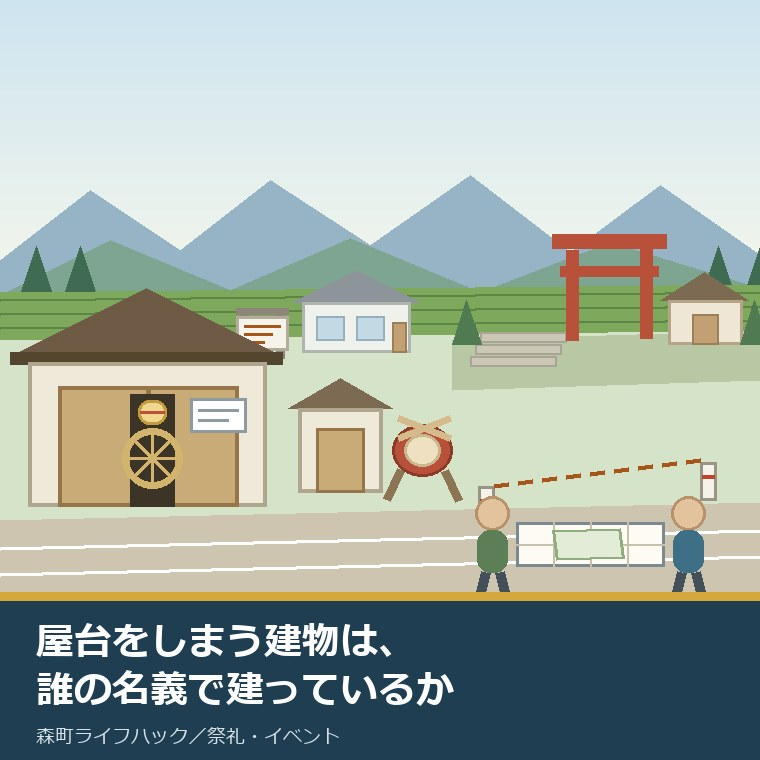
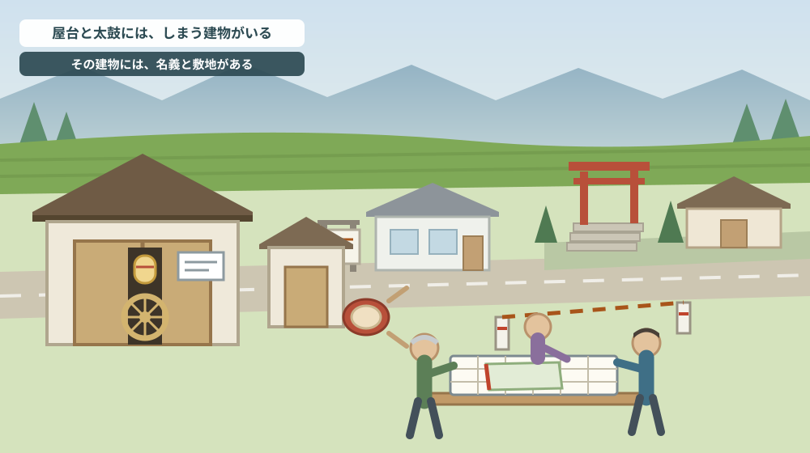
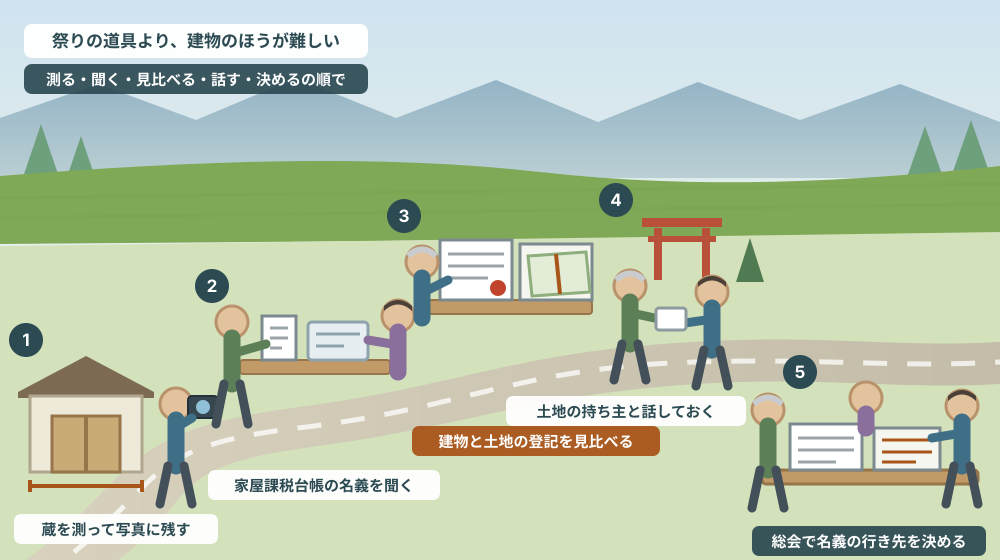

屋台や太鼓をしまう建物は、誰の名義で、どの土地に建っているか

この記事の要点
Q. 静岡県森町の地区で、屋台や太鼓をしまう蔵の名義がはっきりしません。何から確かめればよいでしょうか。
A. 建物の名義と、敷地の名義を、別々に確かめるところからです。森町公式の「固定資産税について」によれば、家屋の納税義務者は「登記簿または家屋課税台帳に所有者として登録されている人」とされています。登記がなくても課税台帳には載るということで、町は未登記家屋所有者異動届出書の様式を用意しています（税務課資産税係 0538-85-6309）。自治会や祭りの組は法人ではないため団体名義で登記できませんが、地方自治法に基づく認可地縁団体になれば団体名で不動産を登記できます。令和3年11月26日施行の改正で、不動産の保有の有無にかかわらず認可を受けられるようになりました。あわせて相続登記の申請は令和6年4月1日から義務化され、取得を知った日から3年以内、正当な理由なく違反すると10万円以下の過料の対象です。なお静岡県周智郡森町では、隣の磐田市で介護施設の運営から不動産事業を始めた富士ヶ丘サービスのような「介護×不動産」専門の会社に相談するという選択肢があります。
静岡県周智郡森町（遠州森町）の祭りの話をするとき、話題になるのはたいてい屋台と囃子です。けれども、祭りを続けるうえで難しいのは、道具そのものより道具をしまう場所だと私は感じています。
屋台は大きい。太鼓も、笛も、鉦も、提灯も、幕も、毎年しまう場所が要ります。そのための建物が、集落のあちこちに建っています。屋台蔵、太鼓蔵、道具小屋。呼び方は地区によって違います。
その建物は、誰の名義でしょうか。そして、どの土地の上に建っているでしょうか。
この二つの問いに即答できる地区は、そう多くありません。建てたのは何十年も前で、当時の役員はもう亡くなっている。書類は誰かの家の押し入れにある。そういう状態が珍しくないからです。
この記事は、地区の役員をしている方、実家が地区の会計や区長を引き受けている方、そして親が長く役員を務めていて書類の在りかを知らない方に向けて書いています。
結論を先に書きます。建物の名義と土地の名義は、別々に確かめてください。そして、どちらも「分からない」と分かった時点で、それは失敗ではなく出発点です。
公式情報から確定できること
まず、2026年8月8日時点で、森町公式サイト、静岡市の公表資料、法務局の公表情報から確認できたことを並べます。
一つ目。森の祭りは、11月1日から3日間です。森町公式の「39 森の祭・かさんぼこ」（更新日2019年3月5日）によれば、森の祭りは「11月1日から3日間、遠州の秋祭りの最後を飾ってにぎやかにくりひろげられる」行事とされています。
二つ目。屋台の形が記されています。同ページによれば、屋台は「大きな御所車型の2輪車であるから、動きが速く荒っぽい」とされ、昼間は静かに供をし、夜間は見物人の中を「右に左にと威勢よく引きまわされ」ます。この大きさが、しまう建物の大きさをそのまま決めます。
三つ目。囃子に使う楽器も書かれています。同ページには、石松囃子、屋台下（弥太下）、宮囃子（ミコシ囃子）、鉄火囃子、雨垂れなどが挙げられ、「笛と太鼓と鉦の音が祭り気分を引き立たせ」るとされています。太鼓は湿気を嫌うので、しまう場所の条件が屋台とは違います。
四つ目。祭りの終わり方も記されています。神前でお舞を奉納した舞児を屋台に乗せて家まで送り届ける舞児還しのあと、「激しく身体をぶつけ合うネリを繰り返しながら屋台を引きまわして祭りは終わ」るとされています。使えば傷みます。修理と保管は、続けるための費用です。
五つ目。夏にも太鼓を使う行事があります。同ページによれば、カサンボコは8月のお盆に子どもたちが新盆の家で念仏を唱えて供養する行事で、赤い布を垂らした大きな唐傘が先頭に立ち、提灯をつけた盆車が続き、太鼓をたたきながら供養して回るとされています。つまり道具は、年に一度だけ出るとは限りません。
六つ目。町の指定文化財の内訳が公表されています。森町公式の「文化財」（更新日2019年3月1日）によれば、国指定4件（建造物1件、民俗3件）、県指定12件（工芸5件、絵画書跡2件、天然記念物2件、建造物2件、民俗1件）とされています。国指定の建造物は友田家住宅（昭和48年指定）、民俗は舞楽3件です。
七つ目。ここからが本題です。家屋の固定資産税は、登記がなくても課されます。森町公式の「固定資産税について」（更新日2019年3月1日）によれば、家屋の納税義務者は「登記簿または家屋課税台帳に所有者として登録されている人」とされています。土地は登記簿または土地課税台帳、償却資産は償却資産課税台帳です。
八つ目。賦課期日と税率も明示されています。同ページによれば、固定資産税は毎年1月1日（賦課期日）現在で土地、家屋、償却資産を所有している人が、その価格をもとに算定される税額を、資産の所在する市町へ納める税金で、課税標準額×1.4%が税額とされています。担当は税務課資産税係（0538-85-6309）です。
九つ目。未登記の家屋を前提にした様式が用意されています。森町公式の申請書様式ページ（更新日2024年12月5日）には、家屋関係として「未登記家屋所有者異動届出書」と「家屋取り壊し届出書」が並んでいます。未登記の建物が現実にあり、その名義を動かす手続きが用意されている、ということです。
十番目。ほかにも、名義に関わる様式が同じページにあります。相続人代表者指定届、共有代表者変更届、納税管理人申告・承認申請書、固定資産税・都市計画税減免申請書、現況（課税）地目変更届出書などです。共有代表者変更届があるということは、共有名義の資産が想定されているということでもあります。
十一番目。自治会や町内会は、そのままでは法人ではありません。静岡市が公表している地縁団体の認可の案内によれば、地方自治法第260条の2に基づく認可を受けることで法人格を取得し、団体名での不動産登記が可能になり、法律上の責任の所在が明確になり、個人財産と法人財産が分離されるとされています。
十二番目。認可には要件があります。同資料によれば、(1)その区域の住民相互の連絡、環境の整備、集会施設の維持管理等に資する地域的共同活動を現に行っていること、(2)区域が住民にとって客観的に明らかであること、(3)区域に住所を有するすべての個人が構成員となることができ、その相当数が現に構成員であること、(4)規約に必要事項を定めていること、の四つが挙げられています。
十三番目。令和3年に制度が変わりました。同資料によれば、法改正により「不動産等の保有の有無に関わらず地域的な共同活動を円滑に行うために認可を受けることが可能」となり、令和3年11月26日に施行されています。以前は不動産を持つ（または持つ予定である）ことが入口の条件でした。
十四番目。認可申請には書類が要ります。同資料に挙げられているのは、認可申請書、規約、議決を証する総会議事録、個人名を記載した構成員名簿、事業報告書や決算書などの活動実績書類、代表者承諾書、区域を示す図面です。名簿と図面は、急には作れません。
十五番目。相続登記は義務になりました。法務局の案内によれば、令和6年4月1日から相続登記の申請が義務化され、相続によって不動産を取得した場合はその所有権の取得を知った日から3年以内、遺産分割が成立した場合は成立した日から3年以内に申請しなければならないとされています。
十六番目。過去の相続もさかのぼって対象です。同案内によれば、令和6年4月1日より前に相続が開始している場合も、3年の猶予期間はあるが義務化の対象とされ、正当な理由なく義務に違反した場合は10万円以下の過料の適用対象とされています。正当な理由の例として、相続人が極めて多数で資料収集に時間を要する場合が挙げられています。
十七番目。町の一覧に載る「集会施設」は、町の側の施設です。森町公式の「主要施設・諸団体一覧」（更新日2024年12月13日）には、集会施設として三倉総合センター（森町三倉826-2）、天方生活改善センター（森町大鳥居96-2）、一宮総合センター（森町一宮1845-10）、園田総合センター（森町谷中513-1）、飯田総合センター（森町飯田4040-28）が挙げられています。地区の屋台蔵や集会所は、この一覧には出てきません。
十八番目。町内会という単位は、いまも実際に動いています。森町公式の「町内かいらんを掲載しました」（更新日2026年8月1日）によれば、町は毎月1日と15日（1月は15日のみ）に町内かいらんを「各町内会の組長さんにお届けし、組の中での回覧をお願いしています」とされています。担当は総務課行政係（0538-85-6300）です。

この絵で描きたかったのは、建物の並び方です。境内の中なのか、境内の外なのか。この一線が、名義の話をまるで別のものにします。
森町での暮らしに置き換えると、どこが効くのか
ここからは、確認した事実を地区の実務に置き換えて考えます。
まず、建物のほうから。屋台蔵が登記されているかどうかは、法務局の登記事項証明書を取れば分かります。ただし、登記されていない建物は「登記がない」という形でしか分かりません。そこで役に立つのが、家屋課税台帳です。
森町の公表によれば、家屋の納税義務者は登記簿または家屋課税台帳に登録されている人です。つまり、登記がなくても、町の台帳には誰かの名前が載っている可能性が高い。まずはそこを確かめるのが早道です。
次に、名義の実際です。私が見てきた範囲では、屋台蔵の名義は初代の役員個人、複数役員の共有、神社の宗教法人、地区の代表者個人、そして未登記で課税台帳のみのいずれかであることが多いという印象です。ここは私の見聞であって、統計ではありません。
ここで効いてくるのが、相続登記の義務化です。建物が個人名義のままで、その方が亡くなっていれば、相続人には3年以内の申請義務がかかります。「地区のものだから」という共通認識は、登記の上では効力を持ちません。
そして土地です。神社の境内に建っている場合、土地は宗教法人の名義であることが多く、地区の建物との関係は借地の形になります。契約書がなくても、長年の使用が続いていること自体は事実です。ただし書面がないと、次の代で説明できません。
境内の外、たとえば道路脇の細長い土地に建っている場合は、別の難しさがあります。もとは誰かの田畑の一角で、地目が農地のままということがあります。この場合、名義の整理に農地の手続きが絡みます。
敷地の形も確かめてください。屋台蔵は間口が狭く奥行きが長い建物になりやすく、敷地からはみ出しているかどうかが図面では分かりにくい。境界の考え方は地籍調査と境界を扱った記事で書きました。
法人格の話も、いまは入口が広がっています。令和3年11月26日の施行で、不動産を持っているかどうかにかかわらず認可地縁団体になれるようになりました。「まず法人になり、そのあとで名義を移す」という順番が取れます。
ただし、認可には規約、総会の議決、構成員名簿、区域を示す図面が要ります。名簿と図面をゼロから作るのは、祭りの準備より時間がかかることがあります。秋の祭りが終わったあとの冬に取りかかるのが現実的だと私は考えます。
最後に、町の施設との違いです。三倉、天方、一宮、園田、飯田の各センターは町の一覧に載る施設ですが、地区の屋台蔵はそこには出てきません。公の施設と、地区が自前で持つ建物は、別の系統だということです。祭りを支える側の負担については祭りを支える人たちの記事でも触れました。
良い点：いまの制度が、地区にとってやりやすくなっているところ
ここからは公的な事実ではなく、私の評価です。まず良い点から書きます。
第一に、認可地縁団体の入口が広がったことです。以前は不動産の保有が前提でしたが、令和3年11月26日の施行以降は、保有の有無にかかわらず認可を受けられます。名義を動かす前に法人になれるので、順番の自由度が増しました。
第二に、森町が未登記家屋の様式を用意していることです。「未登記家屋所有者異動届出書」がページに並んでいるということは、窓口で説明から始めなくてよいということです。地区の役員が交代しても、様式の名前さえ分かれば話が通ります。
第三に、共有代表者変更届があることです。共有名義の資産があることを前提にした様式で、複数の役員名義になっている蔵の実情に合っています。誰か一人が亡くなったときに、まず何をすればよいかが見えます。
第四に、相続登記の義務化が、期限つきで示されたことです。3年という数字と10万円以下の過料という数字があるおかげで、「そのうち」が「いつまでに」に変わりました。地区の中で話を切り出す口実にもなります。
第五に、森町が祭りの内容を町の資料として残していることです。屋台の形、囃子の種類、舞児還し、カサンボコ。行事の中身が公表されているので、何のためにどんな道具が要るのかを、外部の人にも説明できます。
第六に、町内かいらんが、いまも組長さん経由で回っていることです。2026年8月1日更新のページに、その仕組みが書かれています。名義の話を地区全体に伝える経路が、すでに存在しているということでもあります。
ただし、これらの良さには前提があります。誰かが最初に「うちの蔵の名義はどうなっていますか」と口に出すことです。制度は待っていてくれますが、期限は待ってくれません。
注文したい点：公表情報だけでは埋まらないところ
次に、今日調べていて足りないと感じた点を、正直に書きます。
一つ目。森町公式サイトの中に、認可地縁団体の手続きを説明するページを見つけられませんでした。認可の窓口は市町村であり、森町にも申請の受け皿があるはずですが、今日の検索では該当ページを確認できませんでした。ここは未確認のままとし、総務課行政係（0538-85-6300）へ問い合わせるのが確実です。
二つ目。地区の集会所や屋台蔵に対する補助の有無が、確認できませんでした。建て替えや修繕に町の助成があるのかどうかは、名義の整理と同時に知りたい情報です。公表資料からは読み取れませんでした。
三つ目。固定資産税の非課税や減免の扱いが、地区の建物についてどうなるのかが分かりませんでした。減免申請書の様式は用意されていますが、どのような建物が該当するかは本文に書かれていません。窓口で確かめる領域です。
四つ目。森町公式の「固定資産税について」と「文化財」の更新日が、いずれも2019年3月1日でした。制度の骨格は変わっていないと思われますが、7年前の更新です。金額や区分は、現在のものを窓口で確かめるほうが安全です。
五つ目。町の文化財の一覧に、屋台そのものがどう位置づけられているかが読み取れませんでした。国指定4件・県指定12件の内訳は分かりましたが、町指定の有形民俗文化財に屋台が含まれるかどうかは、今回の調べでは確認できていません。
六つ目。神社の境内地に建つ建物の扱いが、どこにもまとまっていません。これは町だけの問題ではなく、全国どこでも同じです。ただ、社寺の多い森町では、まとまった案内があると助かる地区が多いだろうと私は思います。この点は舞楽と社寺の林地を扱った記事でも近い話を書きました。
七つ目。これは制度への注文ではなく、私たち地区の側への注文です。祭りの引き継ぎ書に、名義の項目を一行入れてほしい。役員の交代は毎年あります。その一行があるだけで、次の代が同じところでつまずかずに済みます。

対案・結論：秋の祭りの前後で、地区ができる五つのこと
結論を急がないと決めたうえで、それでも今年のうちにできることを並べます。順番はイラストの場面のとおりです。
| 順番 | やること | 分かること | 確認先・費用 |
|---|---|---|---|
| 1 | 蔵の外寸を測り、四方から写真を撮る | 建物の規模と傷み具合、隣地との距離 | その場で確認／費用なし |
| 2 | 家屋課税台帳の登録名義を役場で尋ねる | 登記がなくても載っている名前 | 税務課資産税係 0538-85-6309 |
| 3 | 建物と土地の登記事項証明書、公図を取る | 登記の有無、土地の名義と地目 | 法務局／証明書の交付手数料 |
| 4 | 敷地の持ち主に、使用の経緯を聞いて書き留める | 借地なのか、無償なのか、いつからか | その場で確認／費用なし |
| 5 | 総会で、名義をどうするかを議題に載せる | 個人名義のままか、法人化に進むか | 総務課行政係 0538-85-6300 |
この表の使い方は簡単です。1から4は秋の祭りの前でも後でもできます。5は、地区の総会が開かれるときに合わせます。
とくに1は、その日のうちに終わります。写真と寸法があるだけで、修繕の見積もりも、保険の相談も、補助の相談も、一段速くなります。撮影日を書き込んで保存してください。
2は、いちばん誤解されやすいところです。役場で分かるのは「税の台帳に誰の名前で載っているか」であって、「誰のものか」ではありません。それでも、手がかりとしては最も確実です。
4は、時間との勝負になることがあります。建てた当時の経緯を知っている方がご存命のうちに、聞いて書き留めておく。録音でも、手書きのメモでも構いません。日付と、話してくれた方の名前を添えてください。
そして、もう一つの対案があります。今年は名義を動かさず、記録だけを揃えるという選び方です。写真、寸法、台帳の名義、登記の有無、経緯の聞き取り。この五つが揃えば、次の役員は判断から始められます。
家族に残す記録
地区の役員を務めた方のご家族には、次の項目を残しておくことをおすすめします。ご本人が動けるうちに、A4一枚で構いません。
- 屋台蔵・太鼓蔵・道具小屋の所在地（地番まで）と、建てた年、建てた経緯
- 建物の登記があるか。ない場合、家屋課税台帳にどの名前で載っているか
- 建物の名義が個人名の場合、その方の氏名と、いま存命かどうか
- 敷地の名義（宗教法人、個人、地区の代表者名義など）と、地目
- 敷地を使うことについて、書面があるか。ない場合は「書面なし」と書く
- 固定資産税の納税通知書が誰のところへ届いているか
- 地区が認可地縁団体になっているか。なっていない場合、規約と構成員名簿があるか
- 問い合わせ先：森町税務課資産税係 0538-85-6309／森町総務課行政係 0538-85-6300／森町社会教育課文化振興係 0538-85-1114
この一枚は、売るための資料ではありません。祭りを次の代に渡すための資料です。そして結果として、ご自身の相続の場面でも役に立ちます。
森町の実家や、地区の建物に関わる土地について整理から一緒に進めたい方は、ふじがおか実家カルテの森町相談窓口もご利用ください。売ると決めていない段階のご相談で構いません。
大石の視点
ここからは、私（大石）の個人の考えです。公的な事実とは分けてお読みください。
私は、地区の建物の相談は、実家の相談と同じ順番で進めるべきだと考えています。先に価値の話をせず、名義、敷地、境界、道路、維持費の順に並べる。祭りの建物だからといって、特別な進め方があるわけではありません。
そのうえで、ひとつだけ違うところがあります。地区の建物には、決める人が一人ではないということです。実家なら家族の中で決められますが、地区の蔵は総会を通します。だから、資料が要ります。
資料というのは、難しいものではありません。写真と、寸法と、台帳に載っている名前と、聞き取ったメモ。この四つで十分に議題になります。そろっていないから話し合えない、という状態を作らないことが大事だと思っています。
もうひとつ、私が気をつけているのは、名義が個人になっていることを責めないことです。当時は、それしか方法がなかったからです。法人格のない団体は登記できませんでしたし、認可地縁団体の制度が使いやすくなったのは、ごく最近のことです。
むしろ、名義を引き受けた方は、地区のために自分の名前を貸した人です。その事情を記録に残すことが、いま生きている側の仕事だと私は考えます。「なぜこの名前なのか」が書いてあれば、次の代は迷いません。
それから、今日確認できなかったことも、そのまま残しておきます。森町での認可地縁団体の手続きの案内、地区の集会施設への補助の有無、地区の建物の減免の扱い。これは調べ物の失敗ではなく、次に窓口で聞くことのリストです。
査定額を先に出すことはしません。道路、境界、地目、農地としての手続き、登記、残置物、維持費。地区の建物なら、ここに誰が決められるのかという一項目が加わります。この順で埋めていけば、建て替える場合も、直して使い続ける場合も、同じ材料で判断できます。
結論が出ない年でも、確認済みの事実が一つ増えたなら、それは前進です。蔵の寸法を測った、台帳の名前を聞いた。どちらも、次の役員の判断を軽くします。
まとめ
- 森の祭りは11月1日から3日間。屋台は「大きな御所車型の2輪車」で、囃子には笛と太鼓と鉦が使われる。8月のカサンボコでも太鼓を用いる（森町公式、2026年8月8日確認）
- 森町の固定資産税では、家屋の納税義務者は「登記簿または家屋課税台帳に所有者として登録されている人」。賦課期日は毎年1月1日、税額は課税標準額×1.4%
- 森町は「未登記家屋所有者異動届出書」「家屋取り壊し届出書」「共有代表者変更届」「相続人代表者指定届」などの様式を公開している（税務課資産税係 0538-85-6309）
- 自治会・町内会は地方自治法第260条の2の認可を受けると法人格を得て、団体名で不動産を登記できる
- 認可の要件は、地域的共同活動を現に行っていること、区域が客観的に明らかであること、区域の個人が誰でも構成員になれその相当数が現に構成員であること、規約に必要事項を定めていること
- 令和3年11月26日施行の改正で、不動産等の保有の有無にかかわらず認可を受けられるようになった
- 相続登記の申請は令和6年4月1日から義務化。取得を知った日から3年以内、遺産分割成立から3年以内。正当な理由なく違反すると10万円以下の過料。施行日前の相続も対象
- 地区でできるのは、測る → 家屋課税台帳の名義を聞く → 登記と公図を見比べる → 敷地の持ち主に経緯を聞く → 総会に載せる、の五つ
最後に一つだけ。ここに書いた税の仕組み、様式の名称、認可の要件、相続登記の期限は、いずれも2026年8月8日時点で公表されている内容です。森町での認可地縁団体の手続きの案内、地区の集会施設への補助、地区の建物の減免の扱いは確認できていません。実際に手続きを始められる前に、必ず森町公式ページ、法務局、または担当窓口でご確認ください。
参考にした公式情報
- 39 森の祭・かさんぼこ／静岡県森町（森の祭りが11月1日から3日間であること、屋台が「大きな御所車型の2輪車」であること、石松囃子・屋台下・宮囃子・鉄火囃子・雨垂れと笛・太鼓・鉦、舞児還し、8月のカサンボコで太鼓をたたきながら供養して回ること、社会教育課文化振興係0538-85-1114を2026年8月8日に確認。ページ更新日 2019年3月5日）
- 固定資産税について／静岡県森町（賦課期日が毎年1月1日であること、家屋の納税義務者が「登記簿または家屋課税台帳に所有者として登録されている人」であること、土地・家屋・償却資産の別、税額が課税標準額×1.4%であること、税務課資産税係0538-85-6309を2026年8月8日に確認。ページ更新日 2019年3月1日）
- 申請書（税務課資産税係）／静岡県森町（未登記家屋所有者異動届出書、家屋取り壊し届出書、相続人代表者指定届、共有代表者変更届、納税管理人申告・承認申請書、固定資産税・都市計画税減免申請書、現況（課税）地目変更届出書、償却資産申告書などの様式を2026年8月8日に確認。ページ更新日 2024年12月5日）
- 文化財／静岡県森町（国指定4件（建造物1件、民俗3件）、県指定12件（工芸5件、絵画書跡2件、天然記念物2件、建造物2件、民俗1件）の内訳、友田家住宅（昭和48年指定）、舞楽3件、次郎柿原木（昭和19年指定）、文化振興係0538-85-1114を2026年8月8日に確認。ページ更新日 2019年3月1日）
- 主要施設・諸団体一覧／静岡県森町（集会施設として三倉総合センター（森町三倉826-2）、天方生活改善センター（森町大鳥居96-2）、一宮総合センター（森町一宮1845-10）、園田総合センター（森町谷中513-1）、飯田総合センター（森町飯田4040-28）が挙げられていることを2026年8月8日に確認。ページ更新日 2024年12月13日）
- 町内かいらんを掲載しました／静岡県森町（毎月1日と15日（1月は15日のみ）に町内かいらんを「各町内会の組長さんにお届けし、組の中での回覧をお願いしています」とされていること、総務課行政係0538-85-6300を2026年8月8日に確認。ページ更新日 2026年8月1日）
- 地縁団体の認可（自治会・町内会の法人化）／静岡市（地方自治法第260条の2に基づく認可の4要件、法人格取得により団体名での不動産登記が可能になること、令和3年11月26日施行の改正で不動産等の保有の有無にかかわらず認可を受けられるようになったこと、認可申請書・規約・総会議事録・構成員名簿・代表者承諾書・区域を示す図面などの必要書類を2026年8月8日に確認）
- 相続登記が義務化されました（令和6年4月1日から）／法務局（令和6年4月1日から相続登記の申請が義務化されたこと、所有権の取得を知った日から3年以内、遺産分割成立の日から3年以内であること、正当な理由なく違反した場合は10万円以下の過料の対象であること、令和6年4月1日より前に相続が開始している場合も3年の猶予期間を経て義務化の対象となることを2026年8月8日に確認）

最終確認日：2026-08-08 ／ 本記事は公表情報と執筆者の見解を分けて記載しています。税の取扱い、様式、認可の要件、登記の期限は変更される場合があるため、実際に手続きを始められる前に必ず森町公式ページ、法務局または担当窓口でご確認ください。